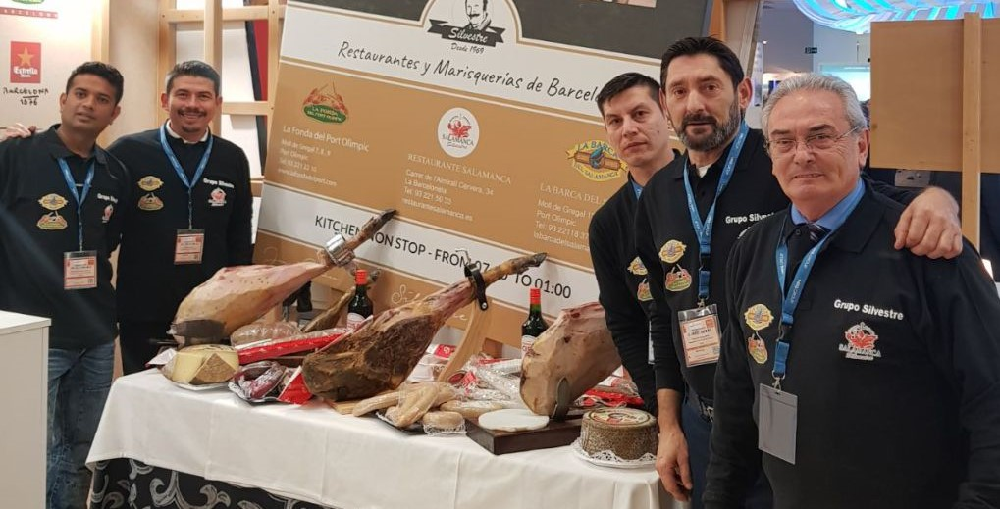

EL GRUPO SILVESTRE EN LA FERIA ITB2018
El Grupo Silvestre ha acudido a la Feria ITB 2018 que se está celebrando esta semana en Berlín.
Como siempre estamos causando sensación con nuestros jamones e ibéricos salmantinos de crianza propia. Y por supuesto apoyando la imagen y el atractivo de nuestra querida Barcelona y de toda Cataluña.